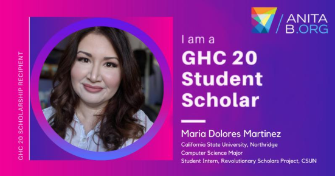
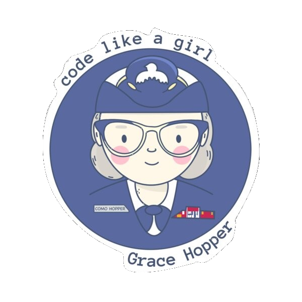

Maria's GHC '20 Virtual Experience 🐱💻
Information
June 10, 2020 at 9 am
Today I received an email stating I was awarded the GHC Student Scholarship to attend the 2020 Virtual Grace Hoppe Celebration. My younger sister was not thrilled that I will not be attending it in person, but I am just excited I was selected.I have recently created a LinkedIn account. If you like to follow me just click on my pic. 🤗 
June 24, 2020 at 9 am
Today I participated in the first virtual GHC Sholar Series. It was the title "Own Your Story" and it was an hour-long webinar presented byWogrammer. What was discussed was how women in STEM never really highlight what we have done and accomplished, but rather highlight another person success. I do have to admit that every topic that was discussed I have and still go through.If you would like to view the PowerPoint slides just click on the pic to the left. 🤗

Created By Maria Martinez
Created By Maria Martinez